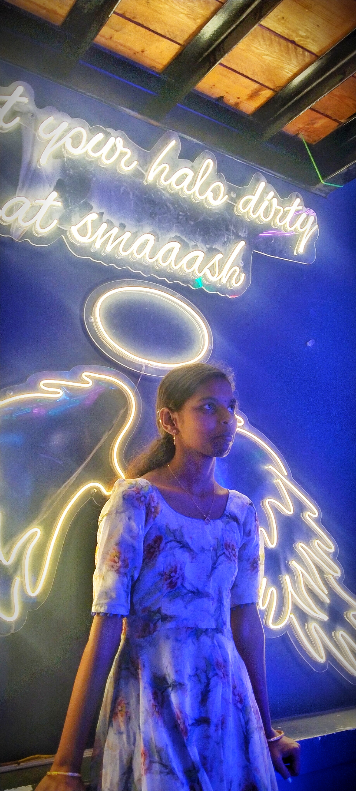

Ramoji Film City
Ramoji Film City is an integrated film studio facility located in Hyderabad, India. Spread over 674 hectares (1,666 acres), it holds the title of the largest film studio complex in the world, as certified by the Guinness World n addition to its film production capabilities, Ramoji Film City serves as a thematic holiday destination and popular tourist attraction. It includes a variety of natural and artificial attractions, including an amusement park. Around 1.5 million tourists visit the place every year.
Read more

Golkonda
During the early seventeenth century a strong cotton-weaving industry existed in Golconda. Large quantities of cotton were produced for domestic and exports consumption. High quality plain or patterned cloth made of muslin and calico was produced. Plain cloth was available as white or brown colour, in bleached or dyed variety. Exports of this cloth was to Persia and European countries. Patterned cloth was made of prints which were made indigenously with indigo for blue, chay-root for red coloured.
Read more

Falaknama Palace
In English architect William Ward Marret designed the palace. It is made completely with Italian marble with stained-glass windows and covers an area of 93,970 square metres (1,011,500 sq ft).
The palace was built in the shape of a scorpion with two stings spread out as wings in the north. The middle part is occupied by the main building and the kitchen, Gol Bangla, Zenana Mehal, and harem quarters stretch to the south. The Nawab was an avid traveller, and this reflects in the architecture.
Read more

Chowmahalla-palace
Chowmahalla Palace or Chowmahallat is the palace of the Nizams of Hyderabad State located in Hyderabad, Telangana, India. It was the seat of power of the Asaf Jahi dynasty (1720-1948) and was the official residence of the Nizams during their reign. Presently the palace is converted into a museum but the ownership still lies with the family.The palace is constructed at the location of an earlier palace of the Qutb Shahi Dynasty and Asaf Jahi Dynasty close to the Charminar. Construction of the palace as it stands today was started by Nizam Ali Khan Asaf Jah II in 1769.
Read more

Charminar
The Charminar is a monument and mosque in Hyderabad, India. The structure was built in 1591 AD. It is the most famous building of Hyderabad and also one of the most famous buildings in India. It was built by Muhammad Quli Qutb Shahi to celebrate the end of a deadly plague. The Charminar lies near the bank of the river Musi. It is close to Laad Bazaar and Makkah Masjid. Charminar is taken from two words Char and Minar which translate as Four Towers in Urdu.Some people say that Charminar was the first structure to be constructed in the newly built city of Hyderabad.
Read more

Jagannath Temple
The temple was rebuilt by the King of the Eastern Ganga dynasty, Anantavarman Chodaganga, in the 10th century CE, as described by the Kendupatna copper-plate inscription of his descendant, Narasimhadeva II and Rajendra Chola from the mother side. Anantavarman was originally a Shaivite, and became a Vaishnavite sometime after he conquered the Utkala region, in which the temple is located, in 1112 CE. A 1134–1135 CE inscription records his donation to the temple. Therefore, the temple construction must have started sometime after 1112 CE.
Read more

Statue of Equality
The Statue of Equality is a statue of the 11th-century Indian philosopher Ramanuja, located on the premises of the Chinna Jeeyar Trust at Muchintal, Ranga Reddy district in the outskirts of Hyderabad. It is the second tallest sitting statue in the world. The project of building the statue was conceptualised by the trust to commemorate the 1,000th birth anniversary of Ramanuja. Costing an estimated ₹1,000 crore (US$120 million), the project was paid for through monetary donations by devotees in a major part.
Read more

Tank band
The Tank Bund Road is a road in Secunderabad, Hyderabad, India. The Tank Bund dams Hussain Sagar lake on the eastern side and connects the twin cities of Hyderabad and Secunderabad. It has become an attraction with 33 statues of famous people from the region.The Pakistan Patton tank, now an attraction for visitors Gardens at Tank Bund
Parallel to the Tank Bund Road, the Lower Tank Bund road was intended to reduce traffic congestion. Lumbini Park is the nearest park to this road. The road is also a major point for street photography.
Read more

Billa Mandhir
The temple manifests a blend of Dravidian, Rajasthani and Utkala architectures. It is constructed of 2000 tons of pure white marble. The granite idol of presiding deity Lord Venkateswara is about 11 ft (3.4 m) tall, and a carved lotus forms an umbrella on the top. A brass flagstaff in the temple premises rises to a height of 42 ft. (13 m). The temple does not have traditional bells, as Swami Ranganathananda wished that the temple atmosphere should be conducive to meditation.
Read more

Shilparamam
The village was conceived with an idea to create an environment for the preservation of traditional Indian crafts. There are ethnic festivals round the year.Shilparamam, a crafts village, conceived in the year 1992, is situated just about few kilometers from Hyderabad city. Sprawling over 65 acres (260,000 m2) of land in the hi-tech hub city of India, Shilparamam gives a scenic ambience of tradition and cultural heritage. For promotion and preservation of Indian arts and crafts and to motivate the artisans, the state government established this platform.
Read more

Munneru Rive
The city known as Khammame sprawls on the banks of the Munneru River, which is a tributary of the Krishna river. This city perfectly blends nature, history, and other beautiful attractions. Witness the famous Narasimha Swamy temple, which existed millions of years ago. Also, explore the Khammam Fort built by Musunuri Nayaks in 950 AD.If you love nature, then Kinnerasani Wildlife Park is another good choice to hit. The park is home to various wild animals, including Bogatha Waterfall, Sambar, Cheetahs, Gaurs, Wild Boars, Chinkara, and many more.
Read more

Makkah Masjid
Makkah Masjid is one of the oldest and largest mosques in India. Located close to landmarks of Charminar, Laad Bazaar and Chowmahalla Palace, the mosque holds 400-year-old history in its bricks. The mosque gets its name from Macca, the holiest site for Muslims: The monument was constructed from the soil brought in from Mecca upon the order of the late Muhammad Quli Qutb Shah, the fifth ruler of the Qutb Shahi dynasty. The three arched facades were carved from a single piece of granite and it took more than 8,000 workers to build the mosque.
Read more
Tarunsai Madhari
Truly an amazing place. I was stunned by the beauty, the carvings and how they`ve still maintained that place so well. I visited this place just some days before Independence Day.. and the best part was entry was free. If you`re visiting Hyderabad or planning to visit you should definitely go here. not to forget the street shopping here, very cheap and affordable with a wide range of items starting with clothing, shoes and many more things.
David
Visited the holy Samata Sthal (Statue of Equality) with my parents. Its a statue of 11th-century saint Ramanuja, located on the outskirts of Hyderabad. It is the second tallest sitting statue in the world.
Absolutely mesmerising experience in this sparkling clean grand campus with majestic architecture, with 108 temples dedicated to Bhagwan Vishnu & his Avatars.
Ppl travelling with elderly are recommended to avail the free Wheelchair facility as it involves very very long walking.Totally recommended for all Hindus.

Gracy
A beautiful place where you can find peace 🤍it is with wonderful Architecture with white marble!it is a perfect place, which not only show it's beauty but also the beauty of Hussain Sagar and it's surroundings !ThanQ Birla jii for giving me the fav place where I luv to visit frequently ❤️🩹The best and must visit place in Hyderabad to give you apositive vibe🤍Juzzt visit it once , you will sure love to make it as a habit to visit again 💚it will steal your heart 🖤

Sheety Saketh
Visited the holy Samata Sthal (Statue of Equality) with my parents. Its a statue of 11th-century saint Ramanuja, located on the outskirts of Hyderabad. It is the second tallest sitting statue in the world.Absolutely mesmerising experience in this sparkling clean grand campus with majestic architecture, with 108 temples dedicated to Bhagwan Vishnu & his Avatars.Ppl travelling with elderly are recommended to avail the free Wheelchair facility as it involves very very long walking.Totally recommended for all Hindus.